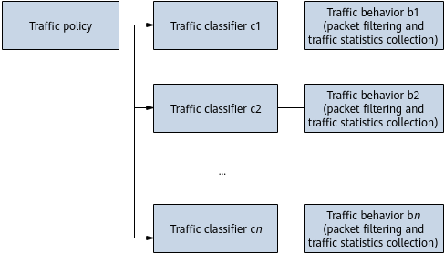

MQC Entities
MQC involves three entities: traffic classifier, traffic behavior, and traffic policy.
Traffic classifier
A traffic classifier defines a group of matching rules for classifying packets. To configure a traffic classifier, specify the following:
- Traffic classifier name
- Traffic classification rules: The device supports a broad range of traffic classification rules, including: link-layer rules (Layer 2 rules), network-layer rules (Layer 3 rules), transport-layer rules (Layer 4 rules), access control list (ACL) rules, and other rules.
- Relationship between rules in a traffic classifier
AND: If a traffic classifier contains ACL rules, a packet matches the traffic classifier only when it matches one ACL rule and all the non-ACL rules. If a traffic classifier does not contain any ACL rules, a packet matches the traffic classifier only when it matches all the rules in the traffic classifier.
OR: A packet matches a traffic classifier if it matches one or more rules.
The traffic classifier
c1 is used as an example, which defines the following rules:
- ACL rules: ACL 3000 and ACL 3001
- Non-ACL rules: The VLAN ID is 10, and the 802.1p value in the outer tag of a packet is 3.
OR: A packet matches traffic classifier c1 if its VLAN ID is 10 or the 802.1p value in the outer tag is 3, the packet matches ACL 3000, or the packet matches ACL 3001.
AND: A packet matches traffic classifier c1 only when its VLAN ID is 10 and the 802.1p value in the outer tag is 3, and the packet matches ACL 3000 or 3001.
Traffic behavior
A traffic behavior defines an action to be taken on packets of a specified type. To configure a traffic behavior, specify the following:
- Traffic behavior name
- Actions: The device supports actions such as packet filtering and traffic statistics collection. If a traffic behavior defines multiple non-conflicting actions, all these actions are successfully configured and take effect. If a traffic behavior defines conflicting actions, the outcome is one of the following:
- When conflicting actions are defined in the traffic behavior view, the system displays an error message and the command fails to be executed.
- When a traffic policy that contains a traffic behavior defining conflicting actions is applied, the system displays an error message and the traffic policy fails to be applied.
Traffic policy
A traffic policy binds traffic classifiers and traffic behaviors, and then actions defined in traffic behaviors are taken on packets of specific types. In
Figure 1, multiple traffic classifiers and traffic behaviors can be bound to one traffic policy.
Figure 1 Multiple pairs of traffic classifiers and traffic behaviors bound to a traffic policy